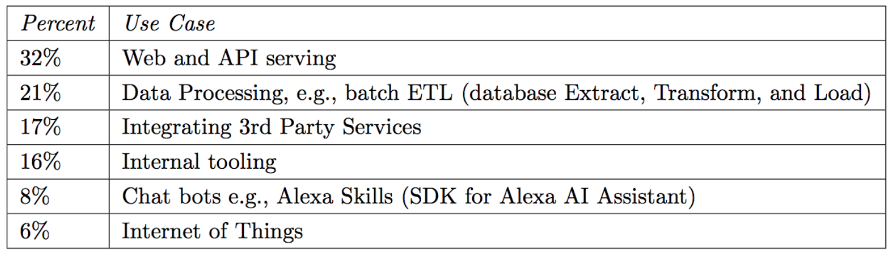

近日，Serverless 作为新兴的架构模式，与其相关的话题被讨论的如火如荼。Serverless 不需部署、配置和管理传统服务器，这一概念的提出打破了前后端的壁垒，使得前端开发者能够真正做到全栈，掀起新一轮的开发模式变革。
Serverless 的背景和发展历程 🔗
InfoQ：Serverless 的背景和发展历程是什么？ 🔗
云计算经过了从物理机到虚拟机、从虚拟机到云计算、从云计算到容器这几个阶段，而容器之后的下一个阶段，则是 Serverless。2009 年 Berkeley 在 《Above the Clouds: A Berkeley View of Cloud Computing》 这篇论文中定义了云计算，并提出了云计算的六个优点：
- 按需提供无限计算资源。
- 消除云用户的前期承诺。
- 根据需要在短期内支付使用计算资源的能力。
- 由于许多非常大的数据中心，大规模降低成本的规模经济。
- 通过资源虚拟化简化操作并提高利用率。
- 通过复用来自不同组织的工作负载来提高硬件利用率。
今天被大家讨论的 Serverless 则最大程度体现了这些优点。从时间上来看，2014 年 11 月，AWS Lambda 的发布，标志则 Serverless 发展的开始。2016 年 Google Cloud Function 和微软 Azure Function 产品的发布，标志着 Serverless 渐渐成熟。2017 年 4 月，阿里云函数计算和腾讯云无服务器函数的发布，则标志着国内 Serverless 发展的成熟。2018 年 9 月，支付宝小程序和微信小程序的云开发功能发布，标志着国内 Serverless 应用场景的落地。
Serverless 的概念及定义 🔗
InfoQ: Baas 出现很早，但一直没火起来，包括 Facebook 关闭了 Parse 服务，为什么现在又认为 Serverless 必须依赖它？ 🔗
现在公认的 Serverless 的定义，是 Serverless = FaaS + BaaS。
传统的编程中，我们定义一个函数，函数针对输入计算输出，这些函数组成了一个应用程序。而 FaaS 则让我们能够在云端编写、运行函数，并由这些云函数组成应用程序。
FaaS 本身提供的只有运行函数的功能，并且每个函数的执行都是孤立和短暂的。但我们的应用程序，往往还需要持久存储和临时存储，以及在存储中进行数据管理，所以我们需要 BaaS。BaaS 就是一些列后端的功能的集合，比如云数据库、对象存储、消息队列、通知服务。没有这些 BaaS，函数的能力是非常有限的。整个 BaaS 也都由云供应商厂商提供，开发者不需要关心具体细节、实现，只需要在 FaaS 中使用 BaaS，这样才能构建整个应用。
Serverless 的优缺点 🔗
InfoQ：Serverless 架构与传统架构相比的优势在哪里？ 🔗
我觉得 Serverless 相比传统 Serverfull 架构主要有以下几个优势：
-
无需运维 Serverless 架构的核心思想就是，构建和运行程序不需要管理服务器等底层资源。基于 Serverless 架构，应用的部署、扩容、备份、容灾、监控、日志等都不需要开发者关心，这些功能全都由云供应商提供。开发者就可以从以往繁琐的运维工作中解脱出来，专心实现自己的产品。
-
低成本 传统的 Serverfull 架构，我们需要为资源付费。很多时候我们的云服务器等资源都是空闲的，但也需要计算费用，这就造成了不必要的浪费。但 Serverless 架构，我们只需要为计算付费。函数每执行一次，付一次的费用。比如阿里云函数计算、AWS Lambda、微软 Azure Function 等产品，定价几乎都是 1.33 元 / 百万次 的执行次数，0.00011108/GB-s 的运行时间，如果你的应用比较轻量，每个月的成本是非常低的。
-
更简单 相比传统架构下的开发，基于 Serverless 架构的开发将变得更简单。云计算平台已经为我们提供了一系列的基础设施，我们只需要在此之上进行应用开发。传统架构，就犹如编程语言中的底层语言，如汇编，我们需要关心每一个细节，细致到 CPU 寄存器这样的级别。而基于 Serverless 的开发，就犹如 Node.js、Python 等高级语言，我们只需要专注于业务逻辑的实现，可以很高效地构建一个应用，并且这个应用天然就是弹性可伸缩的。
Serverless 的实践 🔗
InfoQ: 依据 Serverless 的概念定义，在实际开发中如何保证性能？有实际的解决方案吗？如果有的话能具体讲一下怎么实现的吗？ 🔗
Serverless 的性能，也是绝大部分开发者都关注的一个话题。相比传统架构，Serverless 架构下，程序的运行需要经过一些列步骤：
- 下载代码
- 启动容器
- 启动运行环境
- 执行代码
前三步统称为冷启动。传统应用则完全没有冷启动时间。冷启动时间的长短，直接决定了应用性能的高低。 一方面，冷启动时间需要 Serverless 服务提供商去优化；另一方面，作为开发者，我们也可以从应用的角度去优化。首先就是选用合适的编程语言。因为 Java 等高级语言的冷启动时间大约是 Node.js、Python 等语言的 100 倍。其次是为函数分配合适的内存。一般而言，内存越大，冷启动的时间越短。基于这点，开发者也可以为 Java 分配更大的内存，使其冷启动时间和 Node.js 一样短。但更大的内存意味着更多的支出。所以为函数选用合适的内存很重要。
还有就是重复利用函数的执行上下文。当一个事件来临，函数冷启动并执行之后，运行环境并不会立即被销毁，而是在一定时间内处于冷冻状态继续等待下一次函数执行。这也是 Serverless 服务平台的一个性能优化方案。基于这样的特点，我们就可以将数据库连接、临时文件等保存在执行上下文中，从而使函数无需在每次运行时都创建这些资源。
除此，我们还可以对函数进行预热。可以通过定时对函数进行调用的方式，使函数一直处于“温暖”状态，从而避免真实请求到来时函数进行冷启动，进而达到提高性能的目的。
InfoQ: Serverless 有那些应用场景，实际开发中表现如何？遇到哪些技术痛点？ 🔗
根据 2018 年的调研，有接近三分之一的用户，将 Serverless 用于接口的开发，还有大部分用来做数据处理、第三方无服务集成或内部工具。

图片来源：https://www2.eecs.berkeley.edu/Pubs/TechRpts/2019/EECS-2019-3.pdf
理论上来说，传统架构能做的事情，Serverless 都能做。Serverless 比较适合有显著波峰波谷的应用或基于事件处理的一些场景。
比如一个系统白天用户量很大，晚上基本没有用户，使用传统架构，晚上服务器资源就是浪费的；而使用 Serverless 架构，只需要为实际的计算付费。
再比如上传图片后，需要对图谱进行压缩、裁剪然后再存储，使用 Serverless 用户只需要在函数中定义好处理逻辑，具体的执行由云计算平台来做。上传图片就是触发云计算平台执行代码的事件。
对于一般应用，实际开发中的痛点，一方面是函数的测试，因为 Serverless 函数往往依赖于第三方服务，如 FaaS 和 BaaS，我们很难对使用了这些服务器的函数进行测试。同时函数是事件驱动的，触发函数执行的事件，在本地也很难模拟。所以要能够方便地对 Serverless 函数进行测试，就需要我们在开发过程中，将函数的业务逻辑和所依赖的第三方服务分离，这样就可以编写单元测试对函数进行测试。另一方面，是函数的性能，性能问题上面已经提到。
对于一些复杂的大型企业级应用，现在我们还很难基于简单的 FaaS 平台去开发。这可能需要一个能够超越 FaaS 的一个可编程框架。
InfoQ: Serverless 运行在云服务上，这方面会带来什么限制吗？ 🔗
最主要的限制就是我们基于 Serverless 的应用严重依赖云服务。云服务的稳定性直接决定了业务的稳定性。当然，我觉得这方面也不用过于担心。云服务肯定会有比我们更专业的开发者去维护。
其次，应用的多云部署或应用的迁移，也会比较麻烦。因为目前 Serverless 还没有一个统一标准，各个云供应商的 FaaS 和 BaaS 实现也不一样。所以当我们想要把 Serverless 应用从一个云服务迁移到另一个云服务，就会变得很困难。解决这个问题的方法，就是尽量让我们的业务代码和所依赖的云服务分离。这样迁移的时候，就只需要修改依赖云服务的相关代码。
Serverless 还存在的另一个问题是底层硬件资源的不确定性。由于云供应商可以灵活的选择底层服务器的规格和型号，这就导致了每个云函数运行的物理环境性能不尽相同。这种不确定性其实暴露了云供应商的背后的目的：他们想要最大化的平衡资源的使用和预算。
Serverless 对前端的影响 🔗
InfoQ: Serverless 对前端开发模式带来什么的变化？ 🔗
纵观整个前端开发模式的演进历程，前端开发由最初的基于 JSP、PHP 等后端语言的模板渲染，演变到了基于 AJAX 的前后端分离，进而再演便到了现在的 BFF（Backend For Frontend）架构模式。
因为前后端分离后，前端的应用变得更加复杂，端也由 PC 端扩展到移动端、客户端甚至 IoT；后端应用也由单体应用转变为了微服务应用，接口变得更加原子化，前后端接口协调开始变得困难。所以前端开始寻求使用 BFF 来做接口的聚合、裁剪，甚至使用 Node.js 来做全栈开发。不管 BFF 也好、全栈也好，都会涉及到服务器的运维，这恰好是前端工程师所不擅长的。而 Serverless 正好能解决这一问题。
基于 Serverless，前端工程师将再度回归到 Web 应用工程师这一职能，前后端也将由分离再度走向融合。前后端的协调也不在是基于接口的协调，而是基于 Serverless 函数的协调。前端工程师能够基于 Serverless 去开发函数、实现后端功能。而后端工程师则去实现不适用函数编写的功能，或者供函数使用的一些微服务。对前端工程师来说，后端变得更简单了；对后端工程师来说，后端变得更靠后了。整体而言，应用的开发效率也大幅提升，开发者只需要关注于业务逻辑的实现，我们可以使用更少的技术在更短的时间内得到更多的产出。
InfoQ：随着前端开发模式的不断演进，目前大部分采用 Node.js 开发 Serverless 应用，为什么选用 Node.js? 有什么优势？ 🔗
- 第一， Node.js 的足够简单、轻量。 拿 Node.js 和 Java 来对比，开发同样的功能，Node.js 的代码会比 Java 少很多。Node.js 函数所消耗的内存等资源也比 Java 要少。再如常用的 REST API 接口中，JSON 格式在 Node.js 里面是原生支持的，而 Java 需要使用第三方库来转换。
- 第二， Node.js 冷启动时间比 Java、C# 等编译型语言要低很多。 有测试表明，Node.js 的冷启动时间比 Java 大约低 100 倍。对于 Serverless 应用来说，冷启动时间是函数性能的关键因素，因此从性能上来说 Node.js 也是开发的首选。
- 第三，Serverless 对前端友好。 前端开发者是 Serverless 的主要使用者和受益者，基于 Serverless 架构，前端开发者可以很容易地开发服务端程序，能够很快速地实现一个完整的应用。而前端开发者最熟悉的服务端语言便是 Node.js，因此很多 Serverless 应用使用 Node.js 实现。
InfoQ: 在 Serverless 的大势所趋下，对前端开发人员的技能有哪些新的要求？ 🔗
最主要的，当然是对 Serverless 架构的学习和理解。当我们在使用一项新技术的时候，一定要充分了解到它的优缺点、适用和不适用场景。
对于前端工程师来说，Serverless 使开发变得更简单了，前端工程师可以很方便进行后端的开发。但前端开发后端，依旧存在一定门槛。前端工程师依旧需要学习一些基本的后端开发知识。
Serverless 也不等于无服务器，只是我们不再需要关心服务器。虽然 Serverless 可以极大程度帮助我们减少运维工作，但我们还是可以了解一些基本的运维知识，这样遇到问题，可以更快速、高效进行排查。
Serverless 未来的发展 🔗
InfoQ: 您怎么看待 Serverless 在未来的发展，在其推广普及的道路上会有怎样的际遇？ 🔗
Serverless 是一种新的架构模式，还在不断发展和完善中。
未来 Serverless 标准一定会走向统一。目前还没有一个统一的 Serverless 标准，不同的云供应商在实现自己的 Serverless 平台。这给开发者的多云部署或应用迁移带来了极大的挑战，也给 Serverless 发挥其潜力带来了限制。因此社区中需要一个能兼容各个服务供应商、封装好部署函数和管理生命周期的框架。在国外有 Serverless Framework 这样的产品在做这些事情，但它们基本都不支持国内的 Serverless 平台如阿里云、腾讯云，国内现在也没有这样的框架。
Serverless 架构在未来也一定会成为主流。现在的 Serverless 还存在的很多限制，比如缺乏细粒度模式的存储支持、缺乏细粒度的协调、缺乏标准的通信模式、还有性能问题；一些非常复杂的业务场景、大型的企业级系统也很难基于简单的 FaaS 平台去开发。这也就导致了现在大部分 Serverless 使用者，只是将其用在一些非核心的场景中。一种技术架构走向主流，一定是要经过经过大规模的实践、经过复杂系统的验证。引用一句话，“架构级的演进机会不是年年都有，甚至是 5 年、10 年都不一定能碰到一次，所以这也同样意味着这是个巨大的机会。”